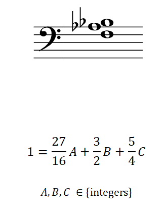
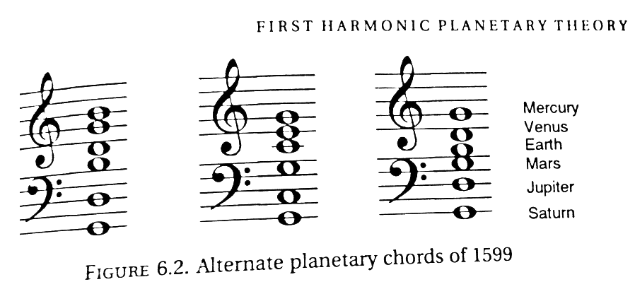

| Home | Calendar | Discography | Acoustics | Pictures |
|---|
I handcraft custom-tuned wind chimes and chime trees to benefit the North Texas Food Bank. These chimes are featured on Light on the Mountain, to be released September 7, 2019.
My current project: numerically solving this underdetermined equation to explain how a lower Db is heard when the notes above are played.
"'What is this great and pleasing sound that fills my ears?' I asked. 'That,' replied my grandfather, 'is a concord of tones separated by unequal but nevertheless carefully proportioned intervals, caused by the rapid motion of the spheres themselves. The high and low tones blended together produce different harmonies...[The] outermost sphere, the star-bearer, with its swifter motion, gives forth a higher-pithed tone, whereas the lunar sphere, the lowest, has the deepest tone.'"
-Cicero, De re publica
Johannes Kepler's planetary chords of 1599, which motivated me to sonify other solar-system mechanisms, like the Saros Cycle. from The Music of the Heavens by Bruce Stephenson.

The Saros cycle coincidentally resembles this chord played by Jaco Pastorius in Portrait of Tracy.